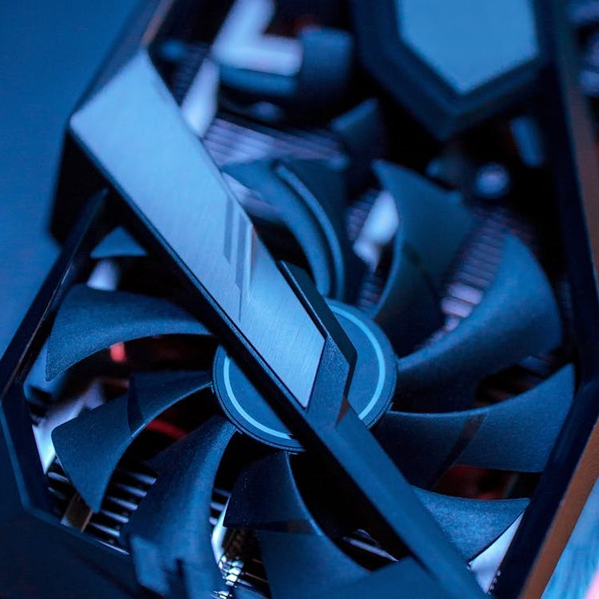

<!DOCTYPE html>
<html lang="en"></html>
<head>
    <meta charset="UTF-8">
    <meta name="viewport" content="width=device-width, initial-scale=1.0">
    <title>Document</title>
    <link rel="stylesheet" href="style2.css">
</head>
<body>
    
  <div id="wrapper">

        <header>

          <a href="index.html"> 
            <button type="button" class="block">  
              
            </button>
          </a>

        </header>
        <nav>
        <h2>

            <div class="dropdown">
              <button class="dropbtn">Meny</button>
              <div class="dropdown-content">
                <a href="chassi.html">Chassi</a>
                <a href="cpu.html">CPU</a>
                <a href="grafikkort.html">Grafikkort</a>
                <a href="hårddisk.html">Hårddisk</a>
                <a href="moderkort.html">Moderkort</a>
                <a href="nätaggregat.html">Nätaggregat</a>
                <a href="ram-minne.html">Ram Minne</a>
              </div>
            </div>

            <div class="dropdown">
              <button class="dropbtn2">Mycket skit</button>
              <div class="dropdown-content">
                Mycket för syns skull
              </div>
            </div>

            <div class="dropdown">
              <button class="dropbtn3">Mer skit</button>
              <div class="dropdown-content">
                Mer för syns skull
              </div>
            </div>

            <div class="dropdown">
              <button class="dropbtn4">Mest skit</button>
              <div class="dropdown-content">
                Mest för syns skull
              </div>
            </div>

         </h2>
        </nav>  
        <aside></aside>
        <main>
          <h3>
Grafikkorten är enheten som tar hand om allt grafik relaterat och skickar informationen till skärmen T.ex.
texturer i spel. Grafikkortet är inte nödvändingt i datorn. Du kan alltså klara dig utan ett grafikkort i
datorn. Då blir det dock svårt med grafiken. Även om du inte har ett grafikkort så kan din processor ha ett 
inbyggt. 
<p>
Den första delen i grafikkortet är GPU:n. Man kan kalla den kärnan i grafikkortet. Den är gjord för att framföra
allt bildrelaterat, grafiken, till din bildskärm. Processorn skickar information som geometri och texturer till
grafikortet. Till skillnad från processorn, som bara kalkylerar en sak åt gången, kalkylerar grafikkortet flera
saker åt gången. Då kalkylerar den hur texturerna och informationen den har fått ser ut och visar det på skärmen 
</p>
<p>
Några andra delar i grafikkortet är VRAM:et (Video RAM-minne). Det är ett minne som är dedikerat till att lagra
texturer och annan data som används till grafikbearbetande. Det är alltså som ett RAM-minne till grafikkortet.
Grafikkortet har också ett eget dedikerat kylningsystem. Grafikkortet blir extremt varmt, så den behöver många
fläktar och kylflänsar. 
</p>
<p>
Runt 2017 så blev crypto-mining rätt stort. Det är för att värdet på stora krypto valutor ökade extremt mycket.
Folk började då "bryta" krypto. Den processen är extremt tung på datorn och behöver riktigt kraftfulla 
grafikkort. Då blev priset på nyare och därmed kraftigare grafikkort mycket höga. Det gjorde att folk som bara
ville ha en speldator behövde spendera mycket mer pengar än vad de skulle behövt annars. På senare år har
konceptet av kryptobrytning dött ner, men grafikkort är fortfarande väldigt dyra att köpa.
</p>
          </h3>
        </main>
        <footer></footer>
        
  </div>
    
</body>
</html>